3D Character Artist
Stylized characters with clear silhouette, costume, and material choices.
I develop characters, avatars, mascots, and outfits from sketches, references, and rough briefs. The result is focused visual direction and a practical brief for the next 3D stage.
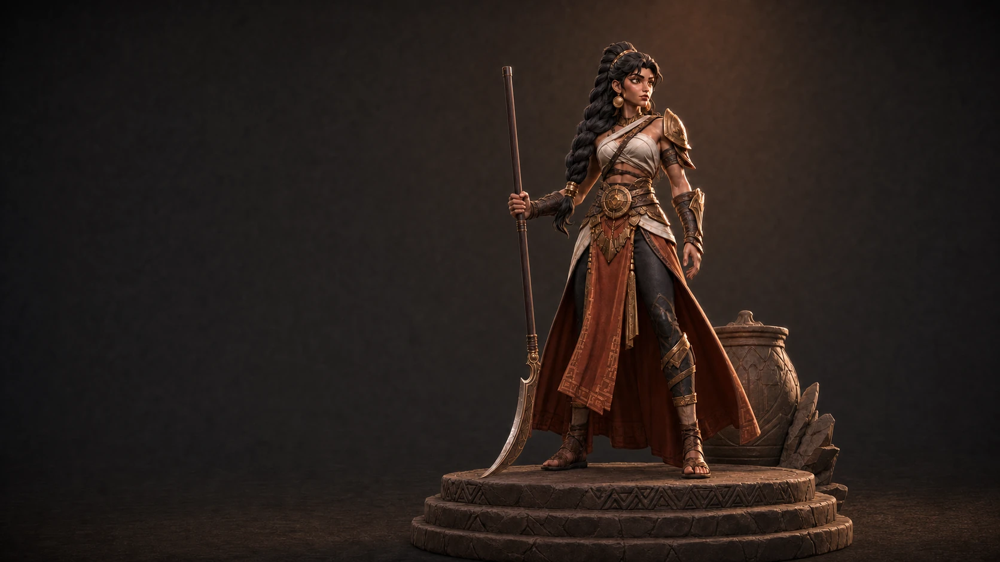
Case Studies
Selected character work.
Start with seven character-focused studies spanning silhouette, anatomy, costume, materials, expression, and presentation. Open the full collection for props, staging, print, and workflow studies.
Showing seven selected character projects.

Fantasy Warrior — Character Direction Study
Lesly organized an existing fantasy-warrior montage into a clear case spanning identity continuity, warm-gray form, costume layers, and material detail.
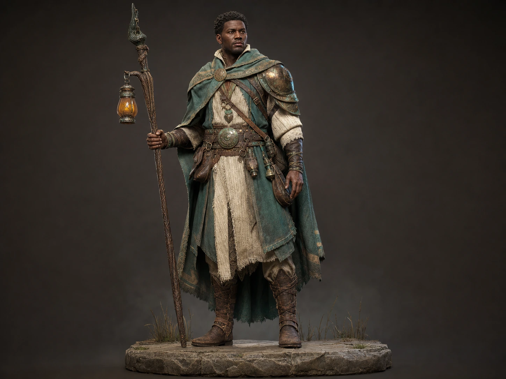
Marsh Warden — Material Direction Study
Lesly built the Marsh Warden website case from a written brief, shaping a face-first material story across skin, hair, linen, teal cloth, leather, bronze, wood, glass, and stone.

Forge Warden — Character Direction
Lesly authored a veteran forge-guardian direction spanning role silhouette, costume hierarchy, rear construction, and material detail.
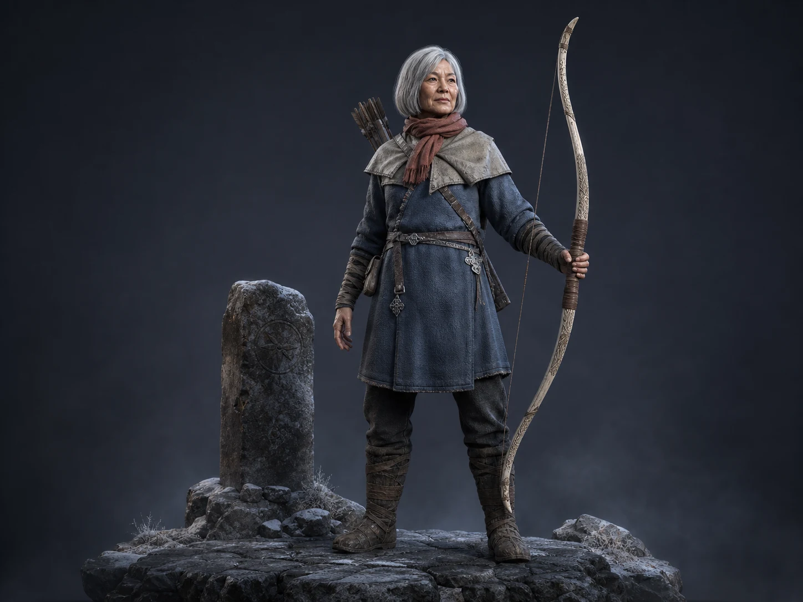
Frostline Ranger — Character Staging Direction
From a written brief to a restrained stage that gives the Frostline Ranger weight, scale, and atmosphere without competing scenery.
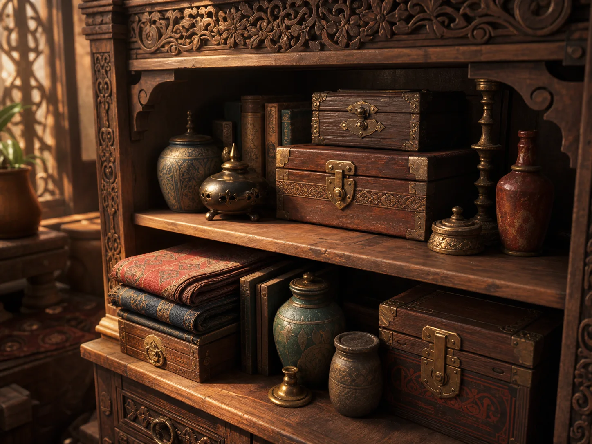
Ornate Interior — Prop & Set-Dressing Direction
An approved shelf direction developed into a clear object-family story with scale rhythm, material contrast, and warm set-dressing composition.
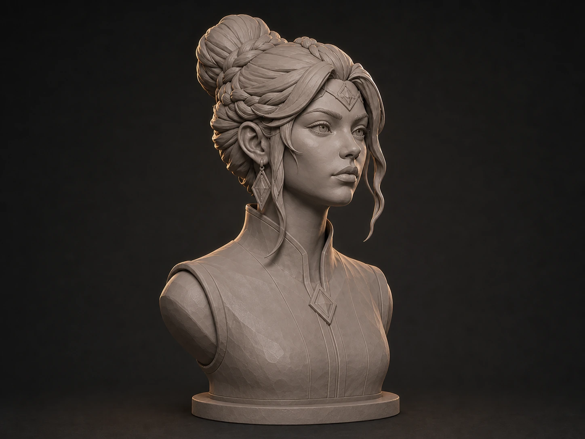
Lyra — Facial Form Study
Lesly developed an earlier Lyra clay-bust reference into a facial-form presentation spanning broad-to-resolved form, profile, braided hair, ornament, and expression.
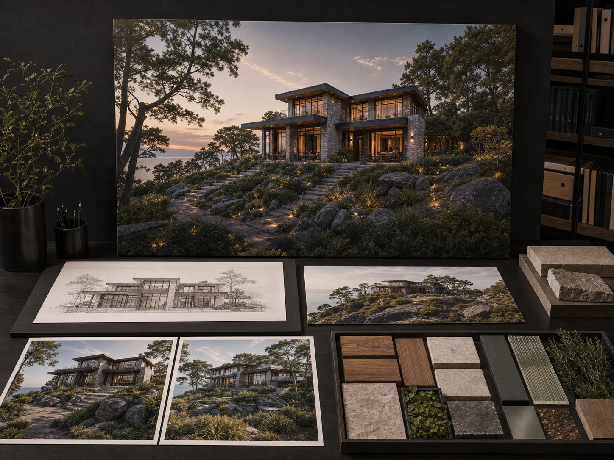
Coastal Residence — Visualization Direction
Lesly developed a fictional coastal-residence brief into a focused study of massing, finish families, coastal setting, daylight, and blue-hour mood.
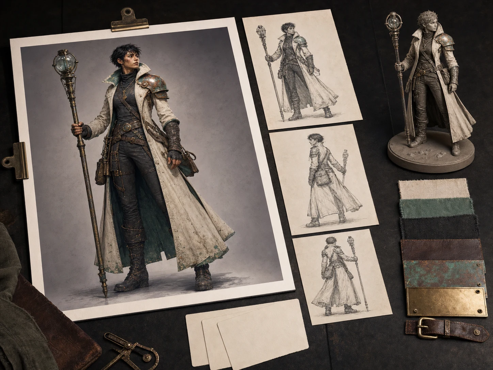
Tideglass Courier — Visual Direction Study
A written character brief developed into a focused identity study spanning silhouette, asymmetric costume, navigation staff, material family, and close detail.
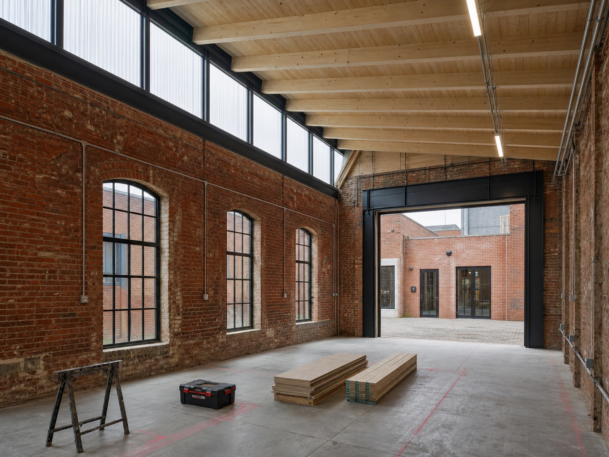
Northlight Workshop — Visual Sequence Study
Lesly developed a fictional workshop brief into a clear visual sequence spanning workshop identity, four visual states, and room-to-detail focus.
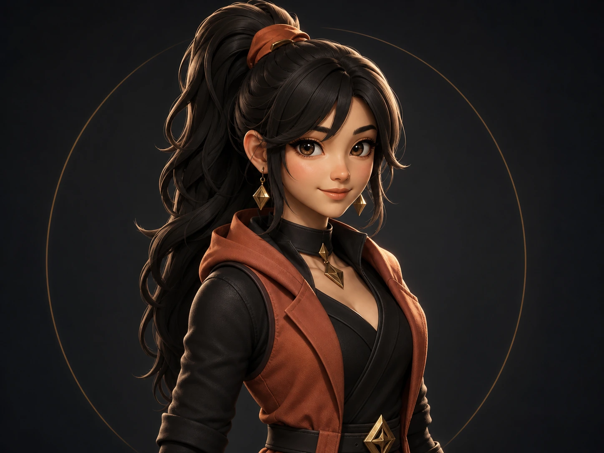
Mira — Avatar Identity Study
Lesly developed an earlier Mira portrait direction into an identity presentation spanning thumbnail read, profile, rear silhouette, costume, jewelry, and expression.
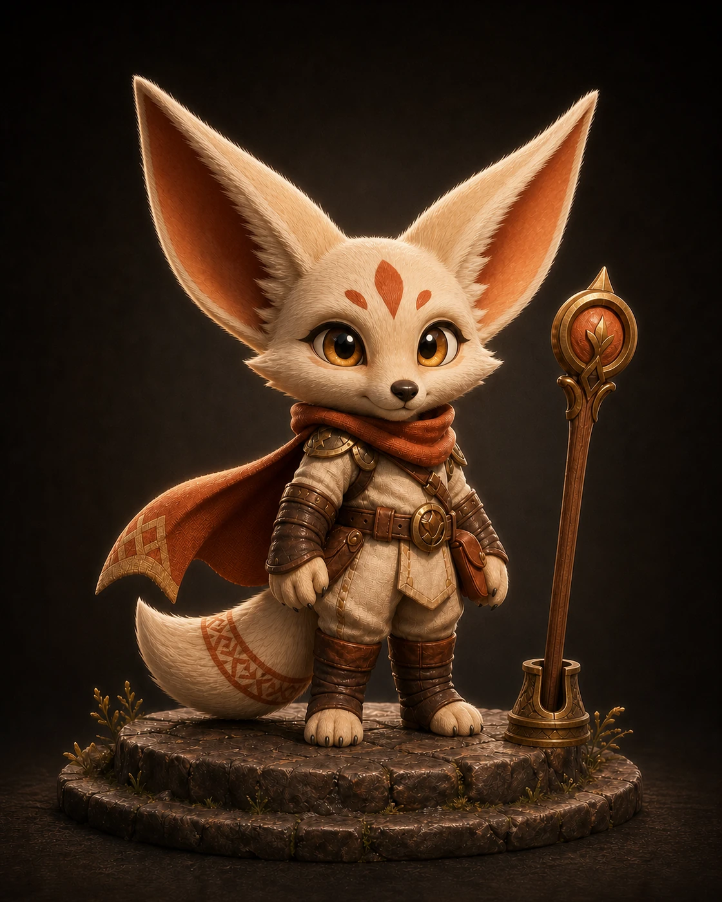
Sol — Mascot Character Range
Lesly built a character-range presentation around the existing Sol identity, spanning front-to-rear silhouette, gesture, expression, paws, tail, costume, and staff placement.
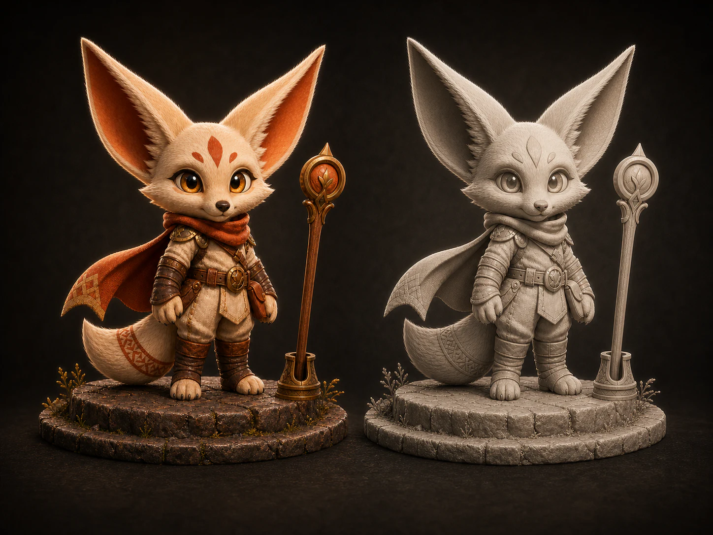
Sol — Collectible Direction
Lesly developed the existing Sol identity into a collectible-focused website presentation spanning color, neutral form, visual grouping, silhouette, staff relationship, and base contact.
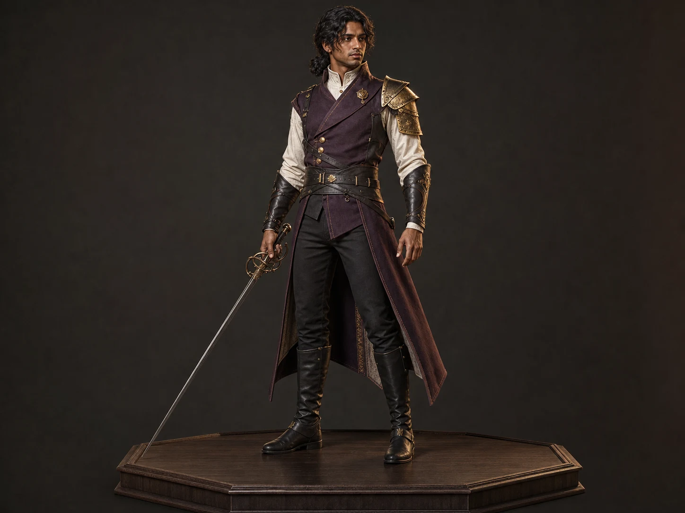
Ember Duelist — Costume Direction
Lesly built the Ember Duelist website case from a written brief, organizing ivory-and-charcoal foundations, plum tailoring, dark leather, asymmetric protection, and rapier into a clear costume story.
Services
Character development for teams that need a clear visual direction.
Lesly can step in while a brief is still moving, helping a studio, founder, or creator turn rough references into character decisions the next production step can use.
-
01
Character Direction
Develop the role, silhouette, anatomy, costume, props, and visual identity from a sketch, reference set, moodboard, or written brief.
-
02
Avatars, Mascots & Costumes
Shape a recognizable character across face, expression, pose, outfit layers, accessories, and the views needed for review.
-
03
Materials & Presentation
Clarify material contrast, color hierarchy, camera, lighting, and staging so the character reads quickly and the intended finish is easier to evaluate.
-
04
Production Planning & Review
Turn the selected direction into focused review points, open technical questions, and handoff notes for the matching model, surface, rig, or real-time work.
Process
Three steps from rough brief to clear next move.
This keeps the work light enough for a fast-moving team while making the important visual decisions visible before production expands.
- 01
Frame the Character
Clarify the role, audience, source references, use case, fixed constraints, and the decisions the team needs first.
- 02
Develop & Review
Explore silhouette, anatomy, costume, materials, expression, and presentation through focused visual studies and direct feedback.
- 03
Resolve & Hand Off
Consolidate the selected direction, note unresolved production questions, and prepare a clear brief for the next 3D or technical stage.
About
A painter’s eye for character form, identity, and presentation.
Lesly is a 3D Character Artist focused on stylized characters that read clearly through silhouette, anatomy, costume, expression, and material contrast.

Her painting background shapes how she approaches color, form, anatomy, silhouette, costume language, and material separation.
She is most useful when the brief is still moving: finding the strongest visual direction, making open questions concrete, and giving the next artist, founder, or production partner a clearer path forward.
Lesly uses AI to organize references, explore early options, and document decisions when it helps. It supports the process; it does not replace the 3D work or the proof a production team needs.
- Discipline
- 3D Character Artist
- Focus
- Stylized characters, avatars, mascots, and costumes
- Strengths
- Silhouette, anatomy, identity, materials, and presentation
- Team fit
- Studios, founders, creators, and small multidisciplinary teams
Start a project
Have a character brief or early visual direction?
Share the idea, references, intended use, and open questions. This form does not send a message; it creates a project brief you can copy and share with Lesly through the contact channel where you found this portfolio.